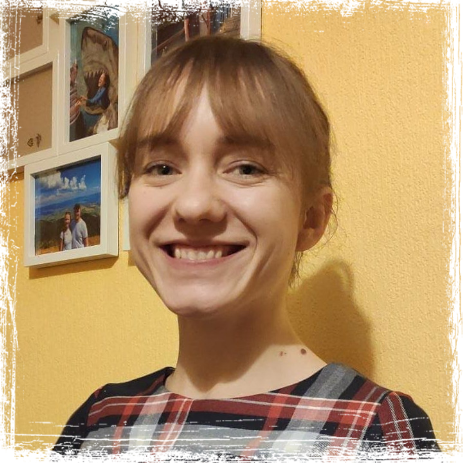

zwanej antypedagogiką, gdzie pedagog/nauczyciel ma wspierać, a nie
„wychowywać”. W naszej placówce dziecko jest postrzegane jako
odrębna jednostka – człowiek, świadomy własnych potrzeb. Idąc w
ślad za słowami J. Korczaka „Pozwól dzieciom błądzić i radośnie
dążyć do poprawy” opiekunowie i nauczyciele pokazują podopiecznym
świat, poprzez prezentowanie dzieciom możliwości wyboru wraz
konsekwencjami, a następnie kreują bezpieczne warunki, by dziecko
mogło swobodnie doświadczać otaczającą je rzeczywistość.
Nasze wartości to wolność, równość, samodzielność. W ciągłym
dialogu z podopiecznym staramy się zapewnić dzieciom tyle swobody,
by czuły się niezależne i odnosiły własne, wypracowanie sukcesy
pod niewidzialną parasolką opieki i wsparcia swojego
opiekuna/nauczyciela. Dzieci, które mają możliwość doświadczania,
eksperymentowania i samodzielnego realizowania zadań, wyzwań,
każdego dnia na miarę własnych umiejętności stają się dorosłymi,
którzy mają ugruntowane poczucie własnej wartości i mają asertywne
nastawienie do środowiska.
Rozwój podopiecznych wspierany jest przez specjalistów takich jak
psycholog, neurologopeda i pedagog specjalny. Każdy z opiekunów i
nauczycieli sukcesywnie podnosi swoje kwalifikacje, by móc być
oparciem dla dzieci i ich opiekunów.
Pedagog, HR-owiec, mediator. Posiada doświadczenie w
zakładaniu jak i w prowadzeniu placówek o charkterze
opiekuńczo- wychowawczym i oświatowych. Realizowała projekty
dofinansowane ze środków UE, gdzie trenowała multizadaniowość.
Umiejętności interpersonalne szlifowała biorąc udział w
realizacji dużych projektów HR. Lubi rozwiązywać zagadnienia
prawne i spędzać czas z rodziną na szlakach górskich.
Parasolka jest spełnieniem jej marzeń, a praca z dziećmi to
jej pasja.
Zuzanna Kwaśniak
Pedagog Opiekuńczy, Trener SensoplastykiR, doświadczenie
zdobywała pracując z dziećmi w żłobku, praktykując w szkole,
gabinecie terapeutycznym oraz działając jako wolontariusz w
świetlicach środowiskowych i stowarzyszeniach edukacyjnych.
Uwielbia być w ruchu, zdobywając nowe doświadczenia, wiedzę
czy odkrywając nowe miejsca. W wolnym czasie zmienia się w
mola książkowego, wychodzacego z założenia, że zawsze jest
czas na dobrą lekturę.
Joanna Kwiatkowska
Pedagog opiekuńczo-terapeutyczny, z ukończoną terapią
pedagogiczną. Doświadczenie zawodowe zdobyła, odbywając
praktyki zarówno w szkole podstawowej, jak i innych formach
opieki i edukacji. Swoje zainteresowania kieruje w stronę
integracji sensorycznej i bajkoterapii, by jak najlepiej
wspierać swoich podopiecznych. Prywatnie lubi piesze oraz
rowerowe wycieczki, którym imponuje dzieciom. Pedagog z pasji,
dostrzegający przyszłego dorosłego w oczach dziecka.

mgr Paulina Turbańska
Nauczyciel wychowania przedszkolnego oraz nauki
wczesnoszkolnej. Na Uniwersytecie Wrocławskim ukończyła
Terapię Pedagogiczną. Doświadczenie zawodowe zdobyła podczas
praktyk w placówkach oświatowych, poradniach
psychologiczno-pedagogicznych, współpracy z przedszkolem
daltońskim oraz działalności opiekuńczej. Z dużej rodziny
wyniosła opiekuńczość oraz troskę. Zdecydowała się na pracę z
dziećmi, ponieważ daje jej to wiele satysfakcji. Uważa, że
każda mała istota posiada ogromny potencjał, który należy
wspierać, aby mógł się rozwijać. Podziwia dzieci za ich
nieograniczoną wyobraźnię. Jej zdaniem cenną zaletą zawodu
nauczyciela jest możliwość dokształcania i poszerzania swoich
kompetencji. Poza pracą jest fanką szlaków górskich, której
celem jest zdobycie Korony Gór Polski. Lubi spędzać czas z
dobrą kawą w towarzystwie książki. Interesuje się kulturą
ludową wielkopolski.
Oferta
W przedszkolu „Parasolka” dzieci spędzają czas pod okiem
wykwalifikowanej kadry. Realizują podstawę programową w oparciu o
pedagogikę Korczaka i pozytywną dyscyplinę. Szczególny nacisk
kładziemy na zachęcanie dzieci do samodzielności poprzez ćwiczenia
z zakresu samoobsługi (między innymi ubieranie kapci, przebieranie
się w strój gimnastyczny, sprzątanie po skończonej zabawie).
Przedszkolaki pracują z podręcznikiem wydawnictwa Mac. Wyobraźnie
i kreatywność pobudzamy poprzez czytanie bajek, opowieści i zabaw
słowem.
Placówka bierze udział w wielu projektach działając na rzecz
społeczności lokalnej, promując czytelnictwo czy w końcu wyrabiać
zdrowe nawyki zaszczepiając u podopiecznych miłość do sportu i
zdrowego odżywiania. Dzieci codziennie, przy sprzyjającej
pogodzie, przebywają na świeżym powietrzu. Przedszkolaki
uczestniczą w wyjściach i wycieczkach poznając kulturę Wrocławia i
najbliższą okolicę. Zapraszani goście zawsze opowiadają naszym
podopiecznym same ciekawe historie.
Informacje o przebytym dniu dziecka w placówce
Rodzice/Opiekunowie prawni otrzymują za pomocą dziennika
elektronicznego. Systematycznie zapraszamy Państwa do udziału w
indywidualnych konsultacjach wyznając zasadę „o dzieciach - nie
przy dzieciach”.
OFERTA CENOWA:
CZESNE
1 zł/h powyżej 5h opieki (od 1 października 2022 - 1,14zł
powyżej 5h opieki).
WYŻYWIENIE
dieta podstawowa - 20,00 zł brutto
dieta (bezmleczna, wegetariańska, bezjajeczna,
bezglutenowa)- 22,00 zł brutto
Rekrutacja na wolne miejsca w Przedszkolu Publicznym Parasolka na rok
szkolny 2023/2024 odbywa się za pomocą elektronicznego systemu
rekrutacji na stronie:
https://rekrutacje.edu.wroclaw.pl/